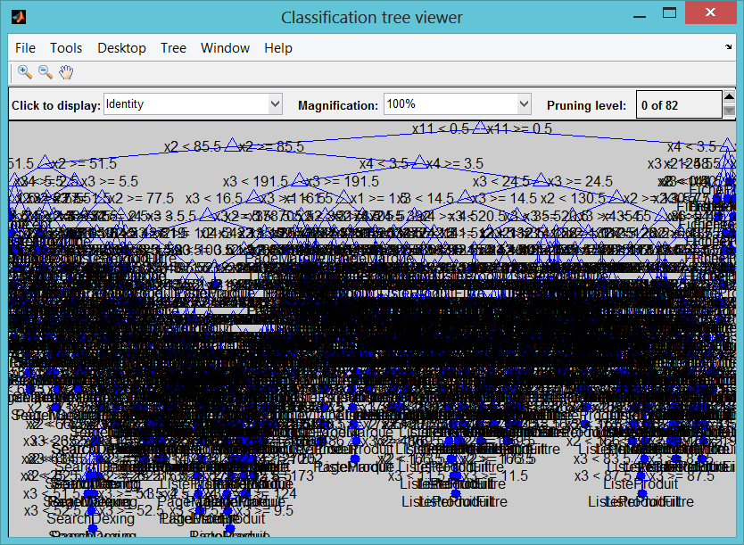

Machine Learning for e-commerce web page page type classification
Implementing and comparing different machine learning techniques to choose the best approach can be challenging. Machine learning is synonymous with Non-parametric modeling techniques. The term non-parametric is not meant to imply that such models completely lack parameters but that the number and nature of the parameters are flexible and determined from data.
Contents
Loading data
load('multiple_source_shallow_crawl_cdiscount.mat');
disp(catPred);
Columns 1 through 4
'depth' 'outlinks_size' 'inlinks_size' 'nb_breadcrumbs'
Columns 5 through 7
'nb_aggregated_ra...' 'nb_ratings_values' 'nb_prices'
Columns 8 through 11
'nb_availabilities' 'nb_reviews' 'nb_reviews_count' 'nb_images'
Cross Validation Hold Out
Cross validation is almost an inherent part of machine learning. Cross validation may be used to compare the performance of different predictive modeling techniques. In this example, we use holdout validation. Other techniques including k-fold and leave-one-out cross validation are also available.
In this example, we partition the data into training set and test set. The training set will be used to calibrate/train the model parameters. The trained model is then used to make a prediction on the test set. Predicted values will be compared with actual data to compute the confusion matrix. Confusion matrix is one way to visualize the performance of a machine learning technique.
% In this example, we will hold 40% of the data, selected randomly, for % test phase. cv = cvpartition(length(Y),'holdout',0.40); % Training set Xtrain = X(training(cv),:); Ytrain = Y(training(cv),:); % Test set Xtest = X(test(cv),:); Ytest = Y(test(cv),:); disp('Training Set') tabulate(Ytrain) disp('Test Set') tabulate(Ytest)
Training Set
Value Count Percent
FicheProduit 12475 45.46%
ListeProduit 5079 18.51%
ListeProduitFiltre 3394 12.37%
PageConcept 6 0.02%
PageMarque 3306 12.05%
SearchDexing 2791 10.17%
Unknown 0 0.00%
Vitrine 393 1.43%
Test Set
Value Count Percent
FicheProduit 8159 44.60%
ListeProduit 3386 18.51%
ListeProduitFiltre 2217 12.12%
PageConcept 3 0.02%
PageMarque 2341 12.80%
SearchDexing 1925 10.52%
Unknown 0 0.00%
Vitrine 264 1.44%
Single Tree performance on training and testing set
t = classregtree(Xtrain,Ytrain); % See tree view(t) % How well did the single tree perform on the training set % very well but overfit the noise predY = t(Xtrain); %predY = round(predY); disp('Single tree : we forecast on the training set where the algorithm has been trained') disp('Full tree training set') myCategoricalErrorRate(predY,Ytrain); C_tree = confusionmat(categorical(predY),categorical(Ytrain)); % Examine the confusion matrix for each class as a percentage of the true class C_tree = bsxfun(@rdivide,C_tree,sum(C_tree,2)) * 100 %#ok<*NOPTS> % Calculate the single tree's predictions on the validating set... predY = t(Xtest); disp('Single tree : we forecast on the testing set where the algorithm has not been trained') disp('Full tree testing set') myCategoricalErrorRate(predY,Ytest); [C_tree, order] = confusionmat(categorical(predY),categorical(Ytest)); % Examine the confusion matrix for each class as a percentage of the true class C_tree = bsxfun(@rdivide,C_tree,sum(C_tree,2)) * 100 %#ok<*NOPTS> order
Single tree : we forecast on the training set where the algorithm has been trained
Full tree training set
Tree, % Good classified rate on set : 95.6712
C_tree =
Columns 1 through 7
99.8080 0.1920 0 0 0 0 0
0 91.5291 3.6164 0 3.3215 0.0197 1.5134
0 5.6681 94.2144 0 0 0 0.1175
0 0 0 57.1429 14.2857 28.5714 0
0 4.9224 0.0597 0.0597 89.4690 4.6838 0.8055
0 0.2883 0 0 4.7928 94.8108 0.1081
0 10.0629 0 0 1.2579 0 88.6792
NaN NaN NaN NaN NaN NaN NaN
Column 8
0
0
0
0
0
0
0
NaN
Single tree : we forecast on the testing set where the algorithm has not been trained
Full tree testing set
Tree, % Good classified rate on set : 92.6264
C_tree =
Columns 1 through 7
99.8898 0.1102 0 0 0 0 0
0.1203 85.3233 6.7669 0 4.9624 0.1203 2.7068
0 12.1078 87.7154 0 0 0 0.1768
0 0 0 0 50.0000 50.0000 0
0 8.2580 0.2465 0.1233 84.4289 6.0805 0.8628
0 0.8390 0 0 5.8731 92.9208 0.3671
0 24.5000 0.5000 0 4.0000 0 71.0000
NaN NaN NaN NaN NaN NaN NaN
Column 8
0
0
0
0
0
0
0
NaN
order =
FicheProduit
ListeProduit
ListeProduitFiltre
PageConcept
PageMarque
SearchDexing
Vitrine
Unknown
 Single tree forecast on the validating set
disp('Single tree : we forecast on the brand new set : other sites Amazon, Darty, RDC') disp('Full tree validating set') predYval = t(Xval); tabulate(predYval);
Single tree : we forecast on the brand new set : other sites Amazon, Darty, RDC
Full tree validating set
Value Count Percent
PageMarque 26446 35.03%
Vitrine 7331 9.71%
FicheProduit 12452 16.49%
PageConcept 3959 5.24%
SearchDexing 1828 2.42%
ListeProduit 23482 31.10%
Bootstrapped aggregated trees
we calibrate the forest with 70 trees and we keep all predictors
tb = TreeBagger(150,Xtrain,Ytrain,'method','classification','OOBVarImp','on'); disp('Forest trees : we forecast on the training set where the algorithm has been trained') disp('Full forest tree training set') % Make a prediction for the test set [Y_train_tb, classifScore_train] = tb.predict(Xtrain); myCategoricalErrorRate(Y_train_tb,Ytrain); % Compute the confusion matrix [C_tb, order] = confusionmat(categorical(Ytrain),categorical(Y_train_tb)); % Examine the confusion matrix for each class as a percentage of the true class C_tb = bsxfun(@rdivide,C_tb,sum(C_tb,2)) * 100 order disp('Forest tree : we forecast on the testing set where the algorithm has not been trained') disp('Full forest tree testing set') % Make a prediction for the test set [Y_test_tb, classifScore_test] = tb.predict(Xtest); myCategoricalErrorRate(Y_test_tb,Ytest); % Compute the confusion matrix [C_tb, order] = confusionmat(categorical(Ytrain),categorical(Y_train_tb)); % Examine the confusion matrix for each class as a percentage of the true class C_tb = bsxfun(@rdivide,C_tb,sum(C_tb,2)) * 100 order % Make a prediction for the test set disp('Forest tree : we forecast on the brand new set : other sites Amazon, Darty, RDC') disp('Full forest tree validating set') [Y_val_tb, classifScore_val] = tb.predict(Xval); tabulate(Y_val_tb);
Forest trees : we forecast on the training set where the algorithm has been trained
Full forest tree training set
Tree, % Good classified rate on set : 93.1424
C_tb =
Columns 1 through 7
100.0000 0 0 0 0 0 0
0.4528 91.6716 4.8829 0 2.1855 0.1772 0
0 13.9069 86.0342 0 0.0589 0 0
0 0 0 16.6667 83.3333 0 0
0 13.4301 0 0 81.9722 4.5977 0
0 0 0 0 7.3450 92.6550 0
NaN NaN NaN NaN NaN NaN NaN
0 38.6768 0.7634 0 5.0891 1.0178 0
Column 8
0
0.6300
0
0
0
0
NaN
54.4529
order =
FicheProduit
ListeProduit
ListeProduitFiltre
PageConcept
PageMarque
SearchDexing
Unknown
Vitrine
Forest tree : we forecast on the testing set where the algorithm has not been trained
Full forest tree testing set
Tree, % Good classified rate on set : 92.7849
C_tb =
Columns 1 through 7
100.0000 0 0 0 0 0 0
0.4528 91.6716 4.8829 0 2.1855 0.1772 0
0 13.9069 86.0342 0 0.0589 0 0
0 0 0 16.6667 83.3333 0 0
0 13.4301 0 0 81.9722 4.5977 0
0 0 0 0 7.3450 92.6550 0
NaN NaN NaN NaN NaN NaN NaN
0 38.6768 0.7634 0 5.0891 1.0178 0
Column 8
0
0.6300
0
0
0
0
NaN
54.4529
order =
FicheProduit
ListeProduit
ListeProduitFiltre
PageConcept
PageMarque
SearchDexing
Unknown
Vitrine
Forest tree : we forecast on the brand new set : other sites Amazon, Darty, RDC
Full forest tree validating set
Value Count Percent
PageMarque 10507 13.92%
ListeProduit 40586 53.76%
Vitrine 11184 14.81%
FicheProduit 12459 16.50%
PageConcept 7 0.01%
SearchDexing 755 1.00%